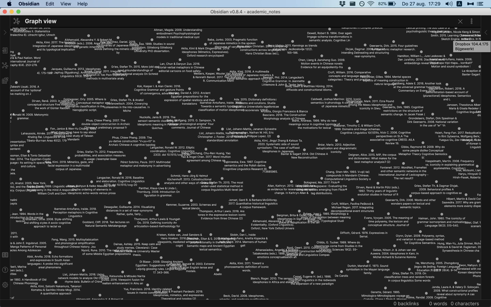
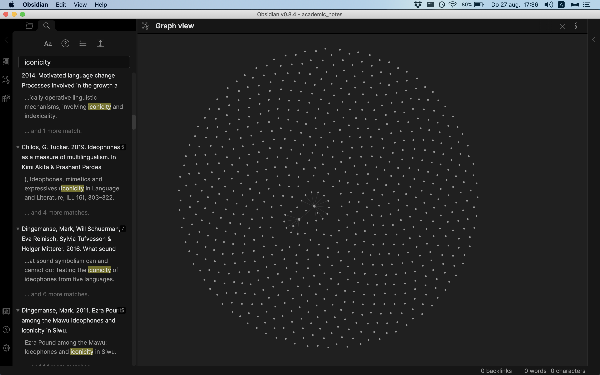
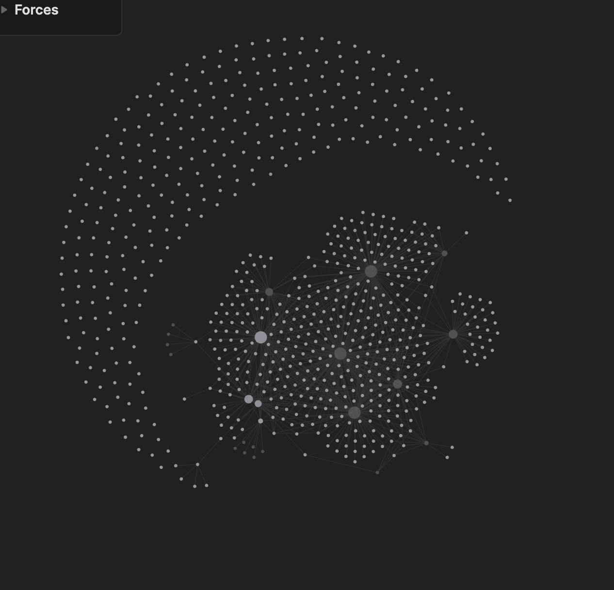
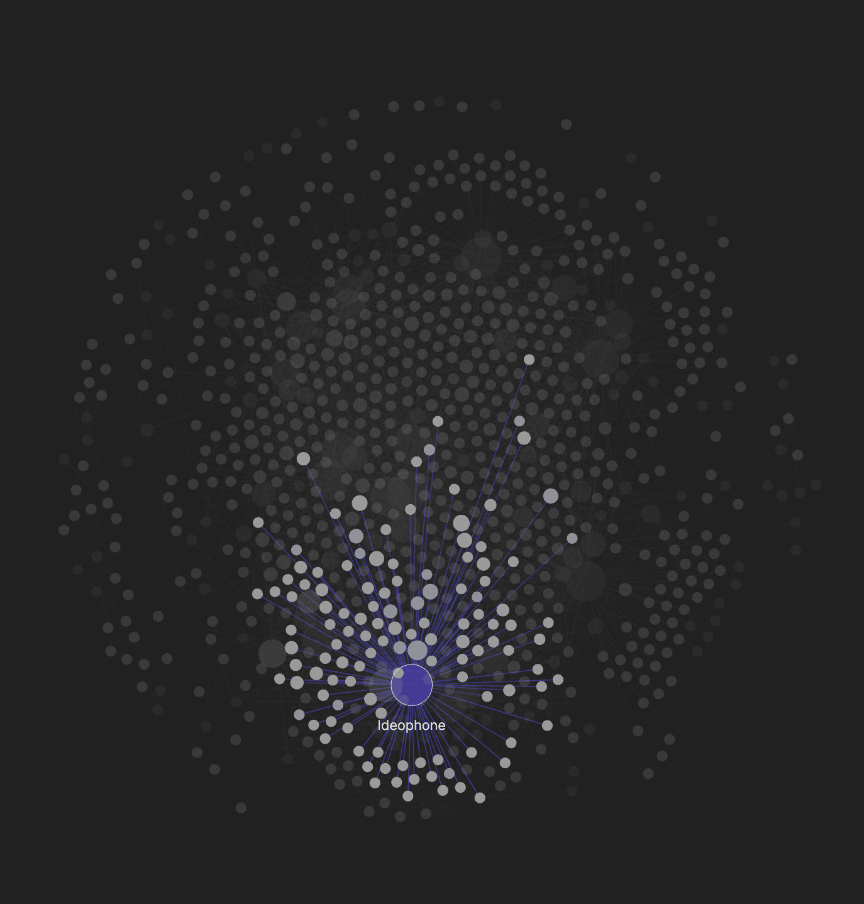
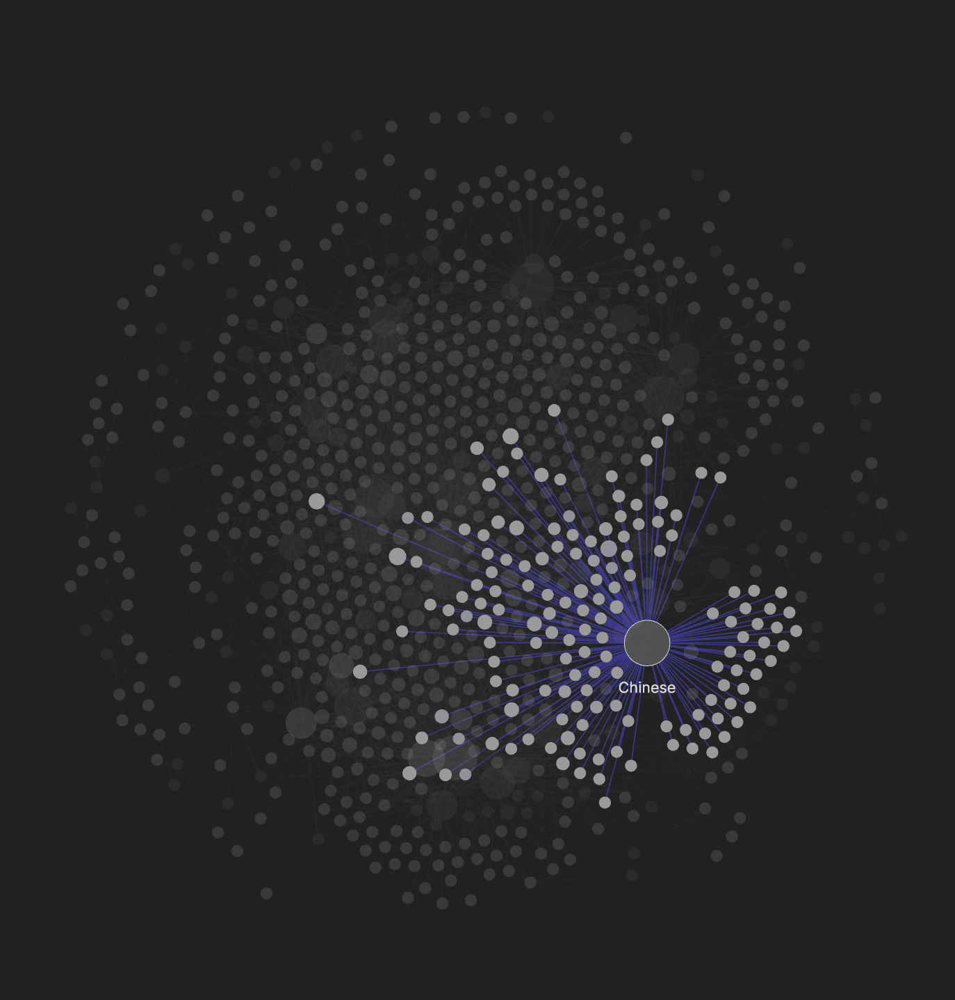

One of the basic skills people, but PhD students and academics in particular, need to cultivate is sharpening their research workflow. You need to cultivate this by just doing it, but also by reviewing it from time to time. In this update, I’ll talk about a new app that has entered my life and made note-taking better: Obsidian (not a paid sponsorship, just me sharing my thoughts).
General note structure
I’ve written about this research workflow before (here and here). In the second post I outlined a method for taking notes and basically still use it to this day:
- Make sure Zotero has the right entry.
- Export a bibliography (Unified Linguistics Stylesheet FTW~~)
- Open a note in the note-taking app.
- Make an entry that looks like this in markdown
SHORT REFERENCE (exported from Zotero but shortened)
FULL REFERENCE (exported from Zotero, just to be sure you get the full reference)
Read: YYYYMMDD
GENERAL OBSERVATION (good / bad paper, useful...)
---
SUMMARY OF THE PAPER
QUOTES
WHATEVER YOU WANT TO TAKE FROM THIS PAPER FOR THE FUTURE YOUThere are quite a few people that will tell you how to take notes content-wise, but I’m here to tell you about my system. The way people take notes is highly individualized, especially in terms of what you actually jot down, and it often really depends on the paper. If it’s a very graphical paper then I would like to add a lot of screenshots or other figures; if it’s just a “oh yeah this exists” paper, then that is what I note and move on with my life.
But what software?
Software-wise, I still don’t think it’s a good idea to keep all your notes in MS Word, but instead look for a way to ensure the longevity of your notes. This video by Nicholas Cifuentes-Goodbody was very influential for me many years ago and I urge you to watch it if you are still stuck waiting for Word to open. Also the slogan in this blog: “Your academic life in plain text”, or this informative blog. If this video and blog appeal to you, you may want to invest in learning markdown. I think at most it will take you 20 minutes that will change your life, as advertised here.
But what do you write markdown in? Like many students of my generation, I started with Evernote, the elephant that promised to help us remember everything. I still think Evernote is a pretty good app for general grabbing and storing, because it has adapted for everything. However, their unwillingness to make a simple native (read: free) markdown editor for a thousand years or so (okay the past five years) has made many people jump the ship, and so did I.
In 2018 (I think) I came across an app called Notable, the brainchild of 1 person, which had the catchy slogan of being “the markdown-based note-taking app that doesn’t suck”. Basically, it was shown that having markdown (.md) files locally on your computer, which you can keep in the cloud, is a fast and reliable way of taking notes, because you’re not locked into an ecosystem (like Evernote but also lots of popular productivity apps). I became convinced that this is what I needed and I am happy I moved away from Evernote to Notable. Somewhat in awe I watched every update over the past few years, like the integration of figures, split editor, etc.
But while the progress of Fabio is admirable and the reddit community is great, I was enticed twice recently to make another switch.
The first enticement was Roam Research but after seeing its exorbitant prices for an extremely new app (165 dollars per year, yuck), I was looking for an alternative and found Obsidian (free for personal use), which is backed by a team of highly motivated people that were either “inspired” by Notable or in a case of convergent evolution developed the same idea that notes should be kept on your own system.
But where it really shines is the backlinking and network visualization of notes, a feature that Roam also excels at and can be implemented in Notable (but is not super well-supported), and I guess it was enough to take the jump and try Obsidian out.
Migrating from Notable to Obsidian with R
As always, I started with an Rproject, so I can sync it to github (private folder though ✌️). In that folder, I have a subfolder ‘academic_notes’ with all the notes and a subfolder ‘attachments’ for all the figures. Next, I just copied everything from my local Notable folder to the new academic_notes folder.
The hardest part was writing a small R-script to change all  from Notable to the form ![[NAME]], so that all figures could be rendered in Obsidian.
Structuring my notes
Just to give you an impression, I have some 700 notes with details as outlined above. This does not represent everything I have ever read, but a good chunk of it. However, in Notable, I just had a flat structure, like this one:

Wow, what a clusterfuck. If we zoom out we can see that every note is represented by a dot. Using the handy backlinking system [[TERM YOU WANT TO TAG]] with the square brackets, you can start linking notes together.

I had quite a bit of fun with manually going through my notes, checking for links and adding unlinked data to the network:

But then I suddenly saw the R-light! I thought, let’s do this programmatically and thematically. So I wrote a dirty script to read in every file and add the double square brackets for every term that I wanted.
For example, if I wanted to link all words that have “ideophone” together, this is what I wrote:
library(tidyverse)
library(glue)
library(fs)
library(here)
files <- dir_ls(here("academic_notes"),
regexp = ".md$")
add_backlink <- function(file){
filepad <- file
target <- glue("(?<!\\[)\\b{word}s?\\b(?!\\])")
vervanging <- glue("[[{word}]]")
read_lines(file) %>%
str_replace_all(target, vervanging) %>%
write_lines(filepad)
}
######################
# change this variable
word <- "ideophone"
######################
walk(files, add_backlink) # actually running thingsAsk me about it if you are interested lol. And if you keep the graph open you can see it changing in real time, which is very satisfying.
Obsidian change with R
A network of notes
And then finally, we get a better representation of the notes that intersect in certain topics. I believe this can help me to write better surveys of the literature. But for now it’s mostly pretty to look at. Good luck trying this out and if you have a different workflow, I’d happily learn about it!

